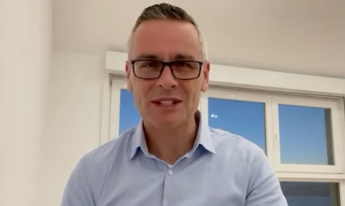

O Congresso Iberoamericano de Associações de Psicologia do Esporte tem como objetivo discutir, refletir, trocar experiências e aprendizado em torno das descobertas e benefícios da psicologia do esporte e atividade física.
O evento será online entre os dias 15 e 17 de outubro de 2021
Este esforço, sem precedentes na história da Psicologia do Esporte mundial, produziu o lema: “Unidos por la psicología del deporte” que convida a pensar esta ciência na”melhor versão científica possível”!
Representando a ABRAPESP, o professor e ex-presidente Cristiano Barreira.
Quer saber mais? Baixe o programa oficial. Ou visite o site: https://ciapsid.com/